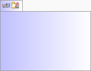

-
Class Summary Class Description AbstractAuditingEntity Base abstract class for entities which will hold definitions for created, last modified by and created, last modified by date.Authority An authority (a security role) used by Spring Security.PersistentAuditEvent Persist AuditEvent managed by the Spring Boot actuatorPersistentToken Persistent tokens are used by Spring Security to automatically log in users.User A user.
Package org.measure.platform.framework.domain Description
JPA domain objects.
-
Dependency Diagram

-
Sub-Packages Diagram
